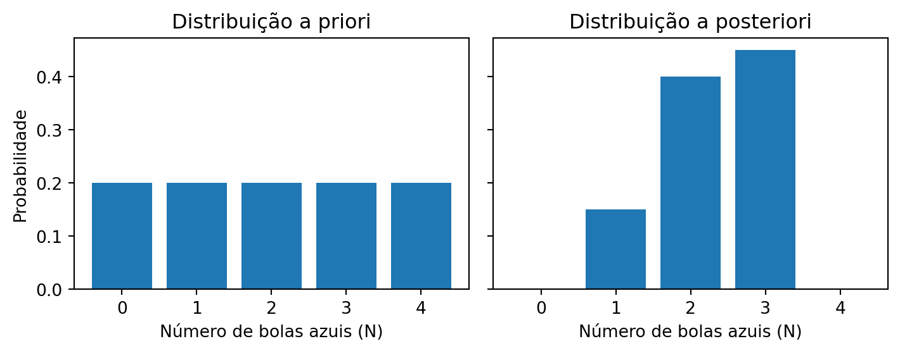

De contagens a probabilidades
A distribuição a posteriori
Transição de contagens para probabilidades sob uma perspectiva bayesiana. Baseado em Statistical Rethinking (McElreath 2018).
Voltemos ao problema das bolinhas de gude. Temos uma caixa contendo quatro bolinhas, que podem ser azuis ou brancas. Sabemos que há exatamente quatro bolinhas, mas não conhecemos a distribuição entre as cores, pois podemos ver apenas uma bolinha por vez através de um orifício. Para estimar quantas bolas de cada cor há na caixa, fazemos uma observação, misturamos as bolinhas, fazemos outra observação e assim por diante. Antes de realizarmos qualquer observação, podemos listar cinco configurações possíveis para o conteúdo da caixa:
- [⚪⚪⚪⚪]
- [🔵⚪⚪⚪]
- [🔵🔵⚪⚪]
- [🔵🔵🔵⚪]
- [🔵🔵🔵🔵]
Nosso objetivo é estimar o número \(N\) de bolas azuis, o qual pode variar, neste exemplo, de 0 a 4. Como não dispomos de conhecimento prévio sobre a composição da caixa antes da primeira observação, adotamos uma distribuição a priori uniforme entre as hipóteses. Assim, cada hipótese recebe uma probabilidade de \(p = \frac{1}{5}\).
| Hipótese | N | Priori |
|---|---|---|
| [⚪⚪⚪⚪] | 0 | \(1/5\) |
| [🔵⚪⚪⚪] | 1 | \(1/5\) |
| [🔵🔵⚪⚪] | 2 | \(1/5\) |
| [🔵🔵🔵⚪] | 3 | \(1/5\) |
| [🔵🔵🔵🔵] | 4 | \(1/5\) |
1 Distribuições a priori, a posteriori e verossimilhança
Suponha que realizamos três observações da caixa e a sequência registrada seja [🔵, ⚪, 🔵] – ou seja, duas bolas azuis. Para atualizar nosso conhecimento sobre a composição da caixa, combinamos nossa distribuição a priori com a verossimilhança de cada hipótese. A verossimilhança é calculada a partir da contagem do número de maneiras em que cada hipótese pode gerar a sequência observada. Em seguida, aplicamos a regra de Bayes, que nos fornece a distribuição a posteriori por meio da fórmula:
\[\text{Posterior}_i = \frac{\text{Priori}_i \times P_i}{\sum_{j} \left(\text{Priori}_j \times P_j\right)}, \tag{1}\]
onde \(P_i\) representa, de forma proporcional, o número de caminhos possíveis para que a hipótese \(i\) gere a sequência [🔵, ⚪, 🔵].
A equação Equação 1 indica que, para cada valor que \(N\) pode assumir, julgamos sua plausibilidade como proporcional ao número de maneiras pelas quais esse valor pode ter gerado os dados, multiplicado pela sua evidência anterior (a distribuição a priori). Esse produto – representado na Tabela 2 por \(\text{Priori}_i \times P_i\) – é então normalizado, dividindo cada um deles pelo somatório \(\sum (1/5 \times \text{Nº de caminhos})\). Essa normalização gera a distribuição a posteriori, que reflete nosso conhecimento atualizado após a incorporação das evidências observadas.
Na Tabela 2, a coluna “Maneiras de produzir N = 2 [🔵⚪🔵]” indica o número de caminhos possíveis para que cada hipótese gere a sequência observada. Note que as hipóteses [⚪⚪⚪⚪] e [🔵🔵🔵🔵] não conseguem gerar a sequência (ou seja, possuem verossimilhança zero).
| Hipótese | N | Priori | Maneiras de produzir N = 2 [🔵⚪🔵] | Posterior |
|---|---|---|---|---|
| [⚪⚪⚪⚪] | 0 | \(1/5\) | \(0 \times 4 \times 0 = 0\) | \(\dfrac{(1/5 \times 0)}{\sum (1/5 \times \text{Nº de caminhos})} = 0\) |
| [🔵⚪⚪⚪] | 1 | \(1/5\) | \(1 \times 3 \times 1 = 3\) | \(\dfrac{(1/5 \times 3)}{\sum (1/5 \times \text{Nº de caminhos})} = 0.15\) |
| [🔵🔵⚪⚪] | 2 | \(1/5\) | \(2 \times 2 \times 2 = 8\) | \(\dfrac{(1/5 \times 8)}{\sum (1/5 \times \text{Nº de caminhos})} = 0.40\) |
| [🔵🔵🔵⚪] | 3 | \(1/5\) | \(3 \times 1 \times 3 = 9\) | \(\dfrac{(1/5 \times 9)}{\sum (1/5 \times \text{Nº de caminhos})} = 0.45\) |
| [🔵🔵🔵🔵] | 4 | \(1/5\) | \(4 \times 0 \times 4 = 0\) | \(\dfrac{(1/5 \times 0)}{\sum (1/5 \times \text{Nº de caminhos})} = 0\) |
Dessa forma, a plausibilidade de cada hipótese é convertida em probabilidades – valores não negativos cuja soma é igual a 1 – para cada uma das hipóteses sobre o conteúdo da caixa. O resultado final da inferência bayesiana é fornecer uma base probabilística para a tomada de decisão sobre um fenômeno parcialmente desconhecido, expressando o quão plausível é cada hipótese à luz dos dados disponíveis (Figura 1).
Esses conceitos possuem nomenclaturas específicas, e vale a pena aprendê-los, pois você os encontrará repetidamente:
- A conjectura sobre o número de bolinhas azuis \(N\) é chamada de valor do parâmetro – uma maneira de indexar as possíveis explicações para os dados.
- O número relativo de maneiras pelo qual esse parâmetro pode produzir os dados é chamado de verossimilhança (likelihood). Essa medida é obtida ao enumerar todas as sequências de dados possíveis e, em seguida, descartar aquelas que não são compatíveis com os dados observados.
- A plausibilidade anterior de um valor específico é denominada distribuição de probabilidade a priori.
- A plausibilidade atualizada de um valor específico, após a incorporação dos dados, é denominada distribuição de probabilidade a posteriori, utilizada para inferir a probabilidade de cada hipótese ou conjunto de hipóteses sobre o parâmetro.
Referências
McElreath, Richard. 2018. Statistical rethinking: A Bayesian course with examples in R and Stan. Chapman; Hall/CRC.